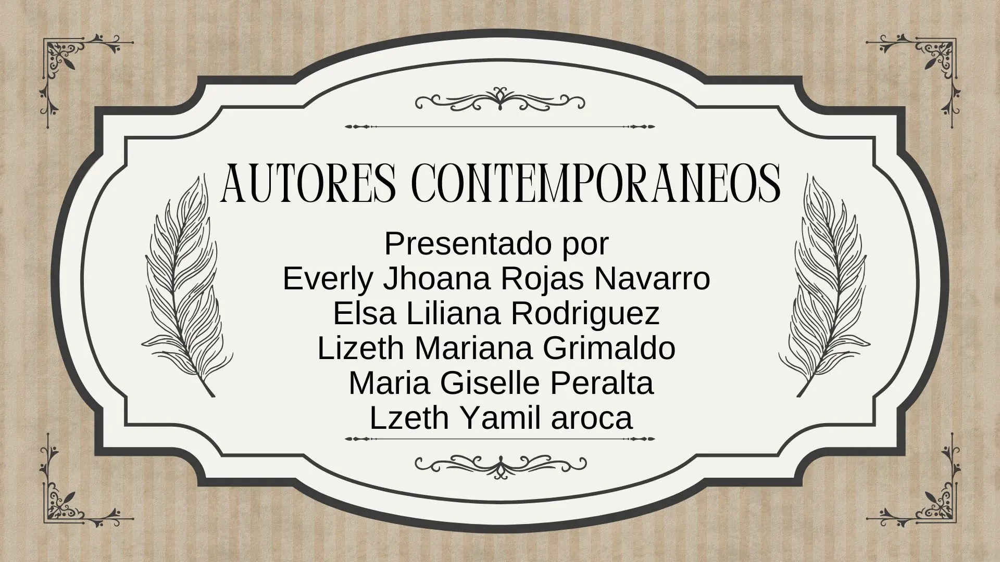

CORTE 2
En este escenario abordaremos Identificaciones y las transformaciones históricas, a partir de las posturas de autores contemporáneos y sus aportes a la construcción de la categoría social de niño y niña como sujeto de derechos.
| 1. Estudiante | 2. Autores seleccionados | 3. Aporte teórico | 4. Aporte al concepto de niño/niña | 5. Aporte a la construcción del concepto de infancia |
|---|---|---|---|---|
| Elsa Liliana Rodriguez Cortes | Jean Piaget | Propuso la teoría del desarrollo cognitivo, en la que el niño construye activamente su conocimiento a través de etapas evolutivas. | Considera al niño y niña como un sujeto activo que aprende mediante la exploración, la experimentación y la interacción con el entorno. | La infancia es entendida como una etapa fundamental para el desarrollo de estructuras mentales, en la que cada fase tiene características propias. |
| Elsa Liliana Rodriguez Cortes | Lev Vygotsky | Desarrolló la teoría sociocultural del aprendizaje, destacando la importancia de la interacción social y el lenguaje en el desarrollo cognitivo. | El niño y la niña es un ser social que aprende en interacción con otros, especialmente con adultos y pares más competentes. | La infancia se concibe como una etapa mediada culturalmente, en la que el contexto social influye directamente en el desarrollo y aprendizaje. |
| Everly Jhoana Rojas Navarro | Maria Montessori | Creación del método Montessori, observación científica del niño, el niño aprende de manera autónoma y natural si se le ofrece un ambiente adecuado. | El niño/niña es constructor de su propio aprendizaje. El desarrollo infantil es un proceso natural que debe ser acompañado no impuesto. |
La infancia es una etapa fundamental y muy decisiva en el desarrollo humano. la infancia no es solo una preparación para la vida adulta. Sino una etapa con valor propio donde se forman las bases del carácter, la inteligencia y la autonomía. |
| Everly Jhoana Rojas Navarro | Paulo Freire | Pedagogía Crítica La educación en una práctica de liberación y trasformación social, el docente y el estudiante aprende mutuamente en un proceso horizontal, Freire entendía la educación como acto político y ético ante la justicia social. |
Se considera la educación como sujeto activo y pensante, no pasivo. El niño es un sujeto histórico social y capaz de reflexionar sobre su realidad según su nivel de desarrollo | La infancia no puede ser una etapa de silencio, sino un momento para desarrollar la autonomía, el pensamiento y la capacidad de trasformar la realidad. |
| Lizeth Mariana Grimaldo Caviedes | Friedrich Froebel | Su gran innovación fue el Kindergarten. Propone que el aprendizaje no debe ser una imposición, sino un proceso de autoactividad. Inventó los "Dones y Ocupaciones" (materiales manipulables) para que el niño descubriera las leyes de la naturaleza a través de la forma y el movimiento. | Define al niño como un ser natural y libre, comparable a una planta en un jardín (de ahí el nombre Kindergarten). Es un sujeto con potencial espiritual y creativo que necesita un ambiente de afecto y libertad para "florecer". | Transformó la infancia en una categoría pedagógica institucional. Gracias a él, se entendió que los primeros años no son solo de cuidado físico, sino una etapa con necesidades educativas propias y especializadas, separándola definitivamente de la educación de los adultos. |
| Lizeth Mariana Grimaldo Caviedes | David Ausubel | Su pilar es el Aprendizaje Significativo. Sostiene que para que un niño aprenda de verdad, la información nueva debe "engancharse" de forma lógica con lo que ya sabe (conceptos previos). Si no hay esa conexión, el aprendizaje es solo memoria mecánica y se olvida. | Ve al niño como un procesador de información activo. No es una hoja en blanco, sino un sujeto que ya trae una "estructura cognitiva" (saberes, experiencias, lenguaje) que el educador debe conocer y respetar para poder enseñar. | Elevó el estatus intelectual de la infancia contemporánea. Su enfoque ayudó a ver a los niños como sujetos capaces de pensamiento complejo, lo que influyó en que los currículos escolares modernos se centren más en la comprensión y el razonamiento que en la simple obediencia o repetición. |
| Lizeth Yamil Aroca Tique | Philippe Ariès | Plantea que la infancia es una construcción social y no solo un hecho biológico. Su obra destaca que en la Edad Media no existía un sentimiento de infancia. | Define al niño como un ser que, históricamente, pasó de ser un "adulto pequeño" a un sujeto que requiere protección y espacios diferenciados. | Su principal aporte es la "invención de la infancia" moderna, asociada a la escolarización y a la familia nuclear como núcleos de cuidado. |
| Lizeth Yamil Aroca Tique | Francesco Tonucci | Propone la "Ciudad de los Niños", donde la participación infantil es el eje para transformar las sociedades urbanas y democráticas. | Ve al niño como un sujeto de derechos activo, con capacidad de opinar y decidir sobre su entorno, no solo como un futuro ciudadano. | Aporta la visión de la infancia como una categoría social política, que debe ser escuchada y tenida en cuenta en el diseño de políticas públicas. |
| Maria Giselle Peralta Méndez | Johann Heinrich Pestalozzi | Los conceptos de la importancia de la educación desde la infancia, en la que el niño aprende de manera progresiva y una visión educativa más humana y menos rígida. | El niño deja de verse como alguien controlado, es un sujeto que aprende y se desarrolla. La educación se adapta al niño. | Ayudó a construir la idea moderna de infancia, para la que es indispensable una educación integral. |
| Maria Giselle Peralta Méndez | Dietrich Tiedemann | Siglos XVIII y XIX es parte de los primeros autores que impulsaron el interés por la infancia y el estudio del desarrollo infantil. Es la figura que inició la educación y estudio moderno del niño. Aparecen disciplinas como psicología y pedagogía que analizan al niño de forma sistémica. |
el niño y su desarrollo se convierten en objeto de estudio, dejando de lado la mirada moral y religiosa en la educación, pasando a una detallada y basada en la evidencia | Ve la infancia desde una mirada científica y observacional, la infancia no solo se construye socialmente, también se construye como objeto científico. |
Accede al material audiovisual preparado en Canva que complementa el análisis y la matriz de lectura presentados en este escenario.

Haz clic en la imagen para ver el material audiovisual en Canva.